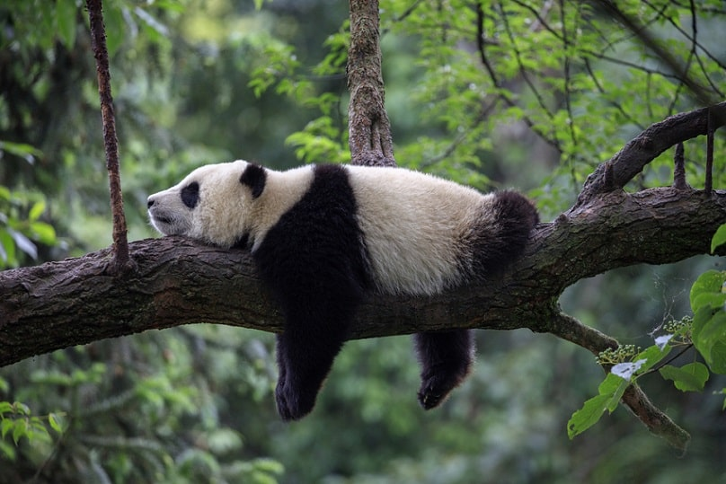
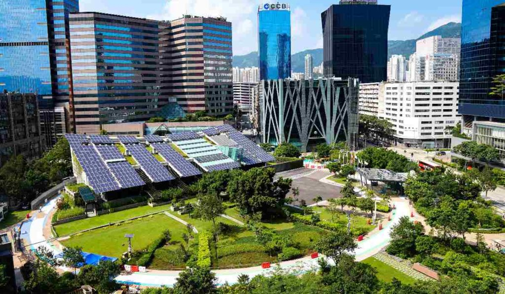

🌱 Importancia

Importancia de la ecología en el mundo
La ecología es una rama de la biología que estudia las relaciones entre los seres vivos y el medio ambiente que los rodea. Su objetivo principal es comprender cómo interactúan los organismos entre sí y de qué manera influyen los factores naturales y humanos en el equilibrio de los ecosistemas. En la actualidad, la ecología se ha convertido en una ciencia fundamental debido a los grandes problemas ambientales que enfrenta el planeta, como el cambio climático, la contaminación, la deforestación y la pérdida de biodiversidad. La importancia de la ecología radica en que permite analizar y comprender el funcionamiento de la naturaleza para desarrollar estrategias que ayuden a conservar los recursos naturales y garantizar la supervivencia de todas las especies. Gracias a los estudios ecológicos, el ser humano puede identificar los daños ocasionados al medio ambiente y crear soluciones sostenibles que favorezcan tanto al planeta como a la sociedad. Los ecosistemas proporcionan recursos esenciales para la vida, como el agua, el oxígeno, los alimentos y las materias primas. Sin embargo, las actividades humanas han provocado un deterioro ambiental cada vez más evidente. La tala excesiva de árboles, la contaminación de los océanos, el uso indiscriminado de combustibles fósiles y la generación masiva de residuos afectan directamente el equilibrio ecológico. Por ello, la ecología busca promover una relación más responsable entre la humanidad y la naturaleza. Además de su importancia científica, la ecología también tiene un valor social, económico y cultural. Un ambiente saludable mejora la calidad de vida de las personas, favorece la agricultura, protege la salud pública y contribuye al desarrollo sostenible de las naciones. Asimismo, fomenta la educación ambiental y la conciencia ecológica, enseñando a las personas la necesidad de cuidar y preservar el entorno natural.
Clasificaciones de la ecología
La ecología se divide en diversas ramas o clasificaciones que permiten estudiar los ecosistemas desde diferentes perspectivas. Cada una de ellas analiza aspectos específicos de la interacción entre los seres vivos y el medio ambiente.
Autoecología
La autoecología es la rama de la ecología que estudia a un organismo o especie de manera individual y su relación con el entorno en el que vive. Analiza las características físicas, biológicas y ambientales que permiten la supervivencia y adaptación de una especie en un determinado ecosistema. Esta clasificación busca comprender cómo influyen factores como la temperatura, la humedad, la luz solar, la alimentación y el tipo de suelo en el desarrollo de los organismos. Gracias a la autoecología, es posible entender los mecanismos de adaptación que permiten a ciertas especies sobrevivir en ambientes extremos.
Ejemplo: Los cactus son plantas adaptadas a los desiertos. Poseen estructuras especiales para almacenar agua y soportar altas temperaturas, lo que les permite sobrevivir en ambientes áridos.

Demoecología
La demoecología, también conocida como ecología de poblaciones, estudia grupos de individuos pertenecientes a la misma especie. Analiza aspectos como el crecimiento poblacional, la distribución geográfica, la densidad, la reproducción y la mortalidad. Esta rama es muy importante porque permite comprender cómo cambian las poblaciones con el paso del tiempo y cuáles son los factores que afectan su estabilidad. También ayuda a prevenir la extinción de especies y a controlar problemas relacionados con la sobrepoblación o la disminución de ciertos organismos.
Ejemplo: El estudio de las poblaciones de tortugas marinas permite identificar las amenazas que enfrentan, como la contaminación y la pesca ilegal, para desarrollar programas de conservación.

Sinecología
La sinecología estudia las comunidades formadas por diferentes especies y las relaciones que existen entre ellas dentro de un ecosistema. Analiza cómo interactúan los organismos mediante procesos como la competencia, la depredación, el mutualismo y el parasitismo. Esta clasificación es esencial para comprender el equilibrio ecológico y el funcionamiento de los ecosistemas naturales. Cada especie cumple una función importante dentro de la cadena alimenticia y cualquier alteración puede afectar a toda la comunidad.
Ejemplo: En una selva tropical, las plantas producen alimento mediante la fotosíntesis, los insectos ayudan en la polinización y los animales dispersan semillas, manteniendo el equilibrio del ecosistema.

Ecología terrestre
La ecología terrestre se encarga de estudiar los ecosistemas que se desarrollan sobre la superficie terrestre. Analiza las características de los bosques, selvas, desiertos, montañas, praderas y otros ambientes naturales. Esta rama investiga cómo influyen factores como el clima, el relieve, la vegetación y los recursos naturales en la vida de los organismos terrestres. También estudia los efectos de las actividades humanas sobre estos ecosistemas.
Ejemplo: La deforestación en la Amazonía afecta la biodiversidad, altera el clima y provoca la pérdida de hábitats naturales para miles de especies.

Ecología acuática
La ecología acuática estudia los ecosistemas relacionados con el agua, incluyendo mares, océanos, ríos, lagos y humedales. Analiza las condiciones físicas y químicas del agua y cómo estas influyen en los organismos acuáticos. El agua es un recurso fundamental para la vida, por lo que esta rama tiene gran importancia en la conservación de especies marinas y en la protección de los recursos hídricos.
Ejemplo: La contaminación de los océanos con plásticos afecta gravemente a peces, tortugas, aves marinas y otras especies acuáticas.

Ecología humana
La ecología humana estudia la relación entre las personas y el medio ambiente. Analiza cómo las actividades humanas impactan los ecosistemas y cómo el entorno influye en la calidad de vida de la sociedad.Esta clasificación aborda temas como la contaminación, el crecimiento urbano, el consumo de recursos naturales y el desarrollo sostenible.
Ejemplo: Las emisiones de gases contaminantes provenientes de fábricas y automóviles contribuyen al calentamiento global y afectan la salud humana.

Ecología urbana
La ecología urbana se enfoca en el estudio de las ciudades y los impactos ambientales generados por las actividades urbanas. Analiza problemas como la contaminación del aire, el manejo de residuos, el ruido y la escasez de áreas verdes. El crecimiento acelerado de las ciudades ha generado importantes desafíos ambientales, por lo que esta rama busca desarrollar ciudades más sostenibles y amigables con el medio ambiente.
Ejemplo: La creación de parques y áreas verdes en las ciudades ayuda a mejorar la calidad del aire y disminuir las temperaturas urbanas.
